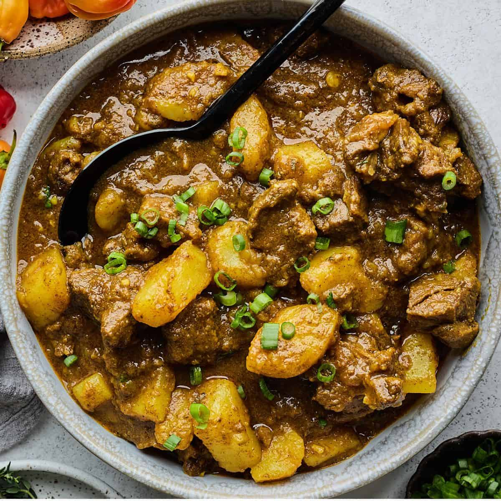
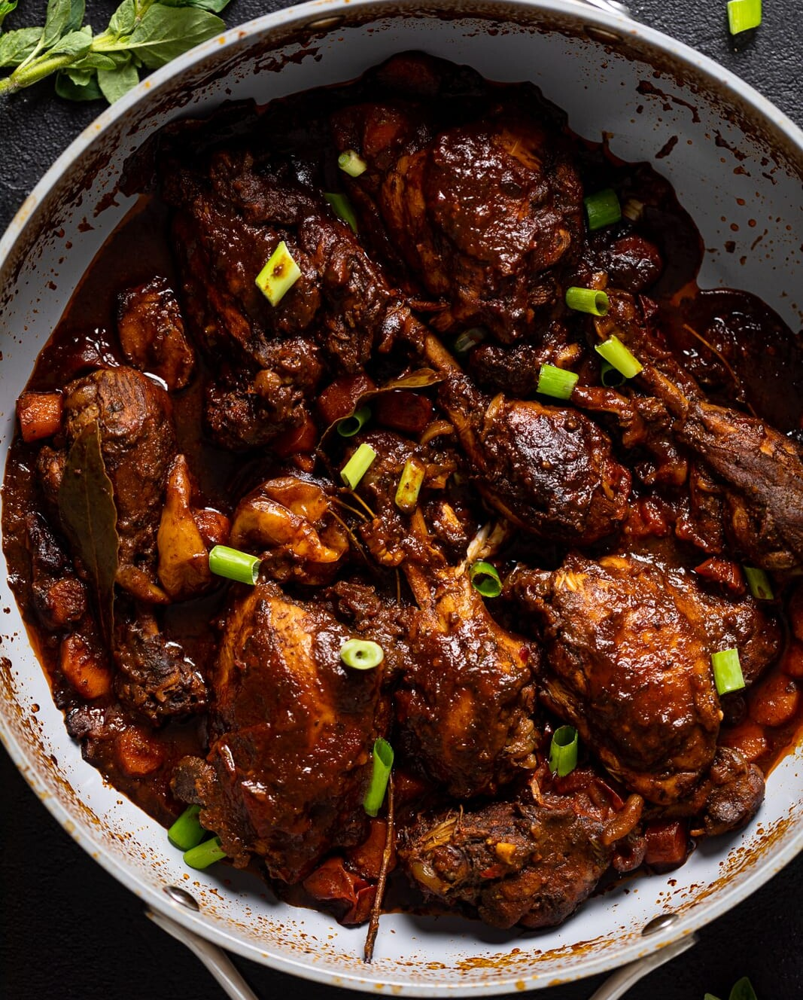

My Recipes
Here are some of my favorite recipes!

Curry Goat
Curry Goat is a traditional Jamaican dish that is made with goat meat, curry powder, and a variety of spices...
Instructions
- Wash the goat meat in water with the vinegar and juice from the lime/lemon. Drain away all excess water.
- In a large enough bowl, season the meat with 1½ tablespoon of curry powder, salt, all-purpose seasoning, pimento, ginger, scotch bonnet pepper, scallion, onion, and garlic. Drizzle about 2-3 tablespoons of oil over the meat and rub the seasoning in and leave to marinate for at least 2 hours (overnight is best).
- Place a pot on medium heat and add about 2 tablespoon of cooking oil and the remaining one tablespoon curry powder. Let the oil heat up (make sure not to burn the curry powder).
- Add the goat meat and allow it to sear on all sides.
- Add enough water to the pot to cover the meat. Cover and leave to cook for an hour and 30 minutes to 2 hours or until meat tender. Occasionally, check to make sure enough water is always in the pot.
- Add the potato and fresh thyme and leave to simmer on low heat until the potato is cooked and sauce is thickened.
Ingredients
| 2½ lb (1.13 kg) goat meat |
| 2½ tbsp curry powder |
| 2 tbsp all-purpose seasoning |
| ½ tsp salt |
| 1 scotch bonnet pepper, seeds removed and finely chopped |
| 6 pimento berries (allspice), crushed |
| 2 stalks scallion, chopped |
| 1 medium onion, chopped |
| 4 garlic cloves, crushed |
| 3 sprigs thyme |
| 1 tsp grated fresh ginger |
| 1 large potato, peeled and diced |
| cooking oil |
| 1 lime or lemon to wash the meat |
| 2 tbsp vinegar to wash the meat |

Brown Stew Chicken
Brown Stew Chicken is a traditional Jamaican dish that is made with chicken, onions, garlic, and a variety of spices...
Instructions
- Dissect and clean the chicken (remove skin and fat) and wash it in water with vinegar and lime/lemon juice. Drain away as much excess water from the chicken, dry and chop into small pieces.
- Season the chicken with the chicken/all-purpose seasoning, ½ tsp of salt and the browning sauce. Add the onion, garlic, scallion, scotch bonnet pepper, thyme, pimento berries, and ginger, or use one ½ tbsp of green seasoning. Rubbing all the ingredients into the chicken ensures all pieces are well coated. (For maximum flavour, leave to marinate for at least an hour).
- Separate the onion, thyme, scallion, garlic and pimento from the chicken, which may be painstaking, so don't try to separate every piece. If you are using the green season, you bypass this step.
- Heat oil in a large enough pot over medium heat. Once the oil is hot, add the chicken brown on all sides. Turn the heat down if needed so the chicken cooks before all sides are brown.
- Pour away the oil leaving about a tablespoon. Add the water, onion, scallion, garlic, thyme, pimento, scotch bonnet (ingredients you separated earlier), bell pepper, tomato, salt, chicken cube stock and ketchup if you use it. Cover the pot and bring to a boil. (At this point, taste the sauce if flavoured to your liking).
- Cook for about 10 minutes. Add the chicken. Reduce the heat to low, cover and simmer for another 10 minutes.
Ingredients
| 771 g (1.7 lb) Chicken |
| 1 Small yellow onion chopped |
| 2 Stalk scallion chopped |
| 2 Garlic cloves crushed |
| ¼ (55 g) Green bell pepper sliced |
| ¼ Red bell pepper sliced |
| ¼ Scotch Bonnet Pepper seeds removed and finely chopped |
| 4 g Grated ginger |
| 4 Sprigs thyme |
| 5 Pimento berries (allspice) |
| 1 ½ tbsp All purpose/chicken seasoning Salt free |
| 1 ½ tsp Salt |
| 1 tsp Browning sauce |
| 2 tbsp ketchup (optional) |
| Chicken cube stock |
| 3-4 tbsp Cooking oil |
| 355 ml (1.5 cups) Water |

Corned Beef and Rice
Corned Beef and Rice is a quick and easy dish that is made with corned beef, rice, onions, and a variety of spices...
Instructions
- Use the can key or a can opener to open the can. Remove the beef from the can with a fork or spoon. Place on a plate and set aside.
- In a hot skillet, add oil and keep temperature on medium to high heat.
- Add onions and bell peppers (if using) and allow them to cook until translucent.
- Add tomatoes and hot peppers and combine well.
- Once the peppers are fragrant, add beef to the skillet and break it apart with a spoon.
- Once completely warmed through, the beef will no longer be solid. It is ready when no longer solid. Serve with rice or your choice of sides. (Bread, dumplings, plantains, etc)
Ingredients
| 1 can corned beef |
| 2 cups rice |
| 1 onion, chopped |
| 3 cloves garlic, minced |
| 1 scotch bonnet pepper, chopped |
| 1 can of chopped tomato |
| 1 tsp allspice |
| 1 tsp black pepper |

Spaghetti Bolognese
Spaghetti Bolognese is a classic Italian dish that is made with spaghetti, ground beef, tomatoes, and a variety of spices...
Instructions
- Put a large saucepan on a medium heat and add 1 tbsp olive oil.
- Add 4 finely chopped bacon rashers and fry for 10 mins until golden and crisp.
- Reduce the heat and add the 2 onions, 2 carrots, 2 celery sticks, 2 garlic cloves and the leaves from 2-3 sprigs rosemary, all finely chopped, then fry for 10 mins. Stir the veg often until it softens.
- Increase the heat to medium-high, add 500g beef mince and cook stirring for 3-4 mins until the meat is browned all over.
- Add 2 tins plum tomatoes, the finely chopped leaves from ¾ small pack basil, 1 tsp dried oregano, 2 bay leaves, 2 tbsp tomato purée, 1 beef stock, 1 deseeded and finely chopped red chilli (if using), 125ml red wine and 6 halved cherry tomatoes. Stir with a wooden spoon, breaking up the plum tomatoes.
- Bring to the boil, reduce to a gentle simmer and cover with a lid. Cook for 1 hr 15 mins stirring occasionally, until you have a rich, thick sauce.
- Add the 75g grated parmesan, check the seasoning and stir.
- When the bolognese is nearly finished, cook 400g spaghetti following the pack instructions.
- Drain the spaghetti and either stir into the bolognese sauce, or serve the sauce on top. Serve with more grated parmesan, the remaining basil leaves and crusty bread, if you like.
Ingredients
| 1 tbsp olive oil |
| 4 rashers smoked streaky bacon, finely chopped |
| 2 medium onions, finely chopped |
| 2 carrots, trimmed and finely chopped |
| 2 celery sticks, finely chopped |
| 2 garlic cloves, finely chopped |
| 2-3 sprigs rosemary, leaves picked and finely chopped |
| 500g beef mince |
| 2 x 400g tins plum tomatoes |
| small pack basil, leaves picked, ¾ finely chopped and the rest left whole for garnish |
| 1 tsp dried oregano |
| 2 fresh bay leaves |
| 2 tbsp tomato purée |
| 1 beef stock |
| 1 red chilli, deseeded and finely chopped (optional) |
| 125ml red wine |
| 6 cherry tomatoes, sliced in half |
| 400g spaghetti |

Minted Lamb Stew
Minted Lamb Stew is a traditional Irish dish that is made with lamb, potatoes, carrots, and a variety of spices...
Instructions
- Add all the ingredients apart from the gravy granules to the slow cooker, including lamb steaks, diced potatoes, onions, carrots, peas, grated ginger, mint sauce, mixed herbs, and vegetable stock.
- Cook for 7½ hours on low or 3½ hours on high, stirring occasionally if possible to ensure even cooking.
- Stir in 1 tbsp of gravy granules at a time until you reach your desired thickness. Replace the lid and cook for an additional 30 minutes. Serve hot with crusty bread or mashed potatoes!
Ingredients
| 400g lamb steaks |
| 4 large potatoes (and peeled if you prefer) |
| 1 large onion (diced) |
| 3 medium carrots (peeled and sliced) |
| 1 cup peas |
| 1-inch piece ginger (grated) |
| 3 tbsp mint sauce |
| 1 tsp mixed herbs |
| 750ml vegetable stock |
| gravy granules or flour if you prefer |